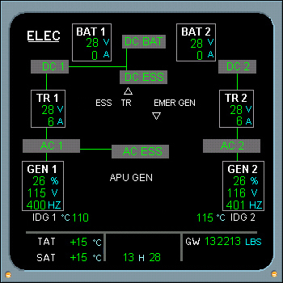
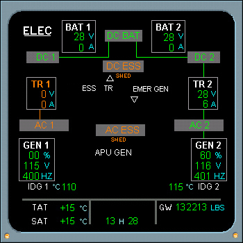
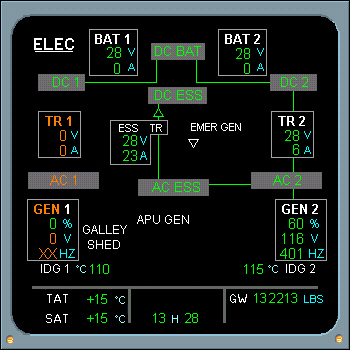

Electrical System Displays
AC 1 Bus Failure
Loss of AC 1 bus will result in loss of TR 1, AC Essential Bus, Essential TR, and numerous systems, including the Captain's PFD, ND, VHF 1, and NAV 1 radios.
To get the AC Essential Bus back on line on some aircraft requires manually selecting the AC ESS FEED switch on the electrical control panel to ALTN. This results in AC Bus 2 powering AC Essential Bus, the Essential TR and the DC ESS Bus.
On some airplanes the AC ESS Bus is connected via automatic switching.
Click on thumbnail to view:
- Normal Power
- AC BUS 1 FAILURE (fault)
- AC ESS BUS powered via AC BUS 2
- 
- 
- 